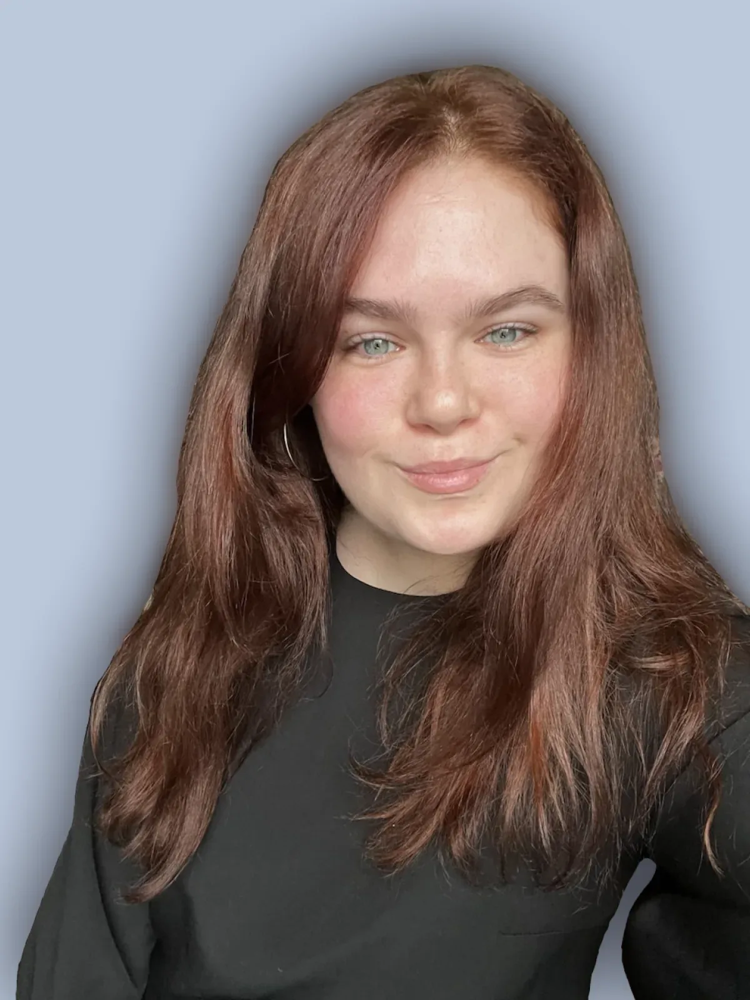
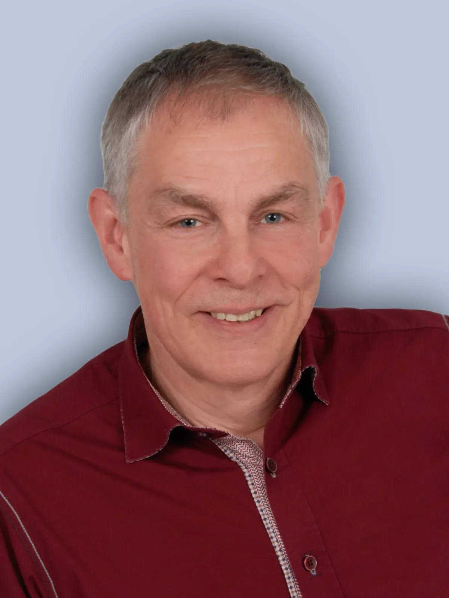
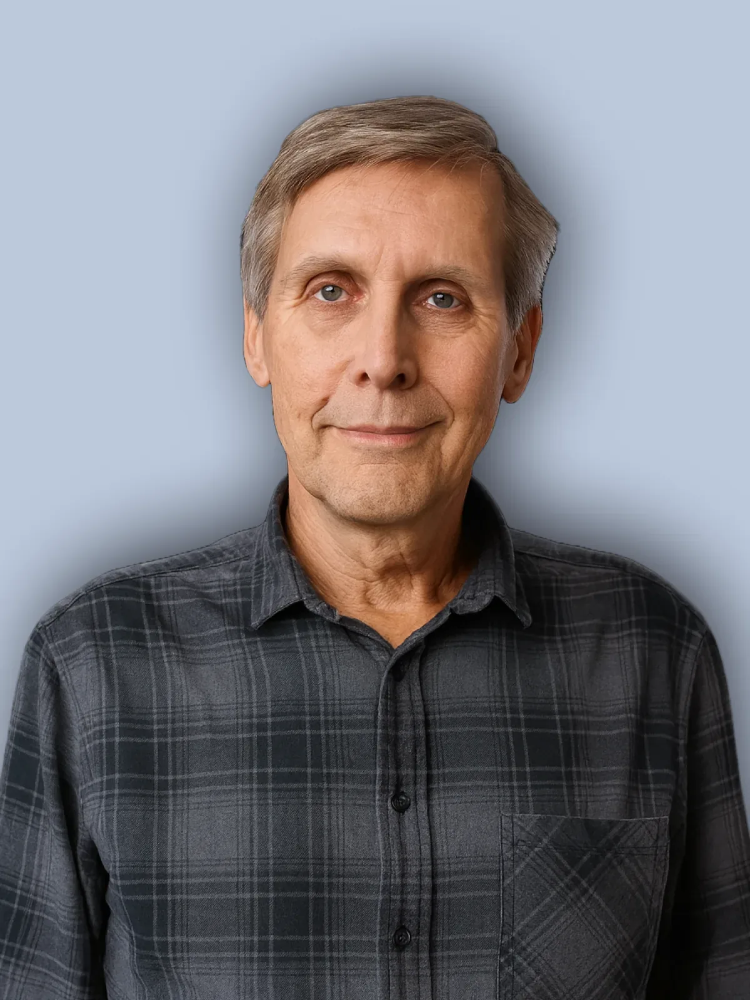

OUR TEAM
One team, many perspectives, one goal: your peace of mind
Behind Beraterium are people with decades of industry expertise and fresh entrepreneurial spirit – practical, solution-focused, and always on equal footing with you.

MANAGING DIRECTOR · DEVELOPER OF THE HR MANAGEMENT APPROACH
Till Manfred Blania
My approach: I combine sound expertise in business, human resources and risk management with practical experience from my own start-ups and consulting projects. My approach brings leaders and employees together to find solutions that genuinely work: individual, practical and easy to understand. The result is structures that enable growth, share responsibility and make everyday working life less stressful.
My goal: I support SMEs and growing companies with HR and risk management solutions that are usually available only to large organisations — clear, affordable and immediately actionable. This helps companies become places where people enjoy working, take responsibility and grow together.
As soon as a team understands how important its contribution is to the bigger picture, it moves from going through the motions to genuine engagement. I see my role as bringing everyone to the table.
As an economist, founder and consultant, I have learned that business success happens where people share responsibility, structures are clear and everyone can fulfil their potential. My path has taken me through various industries — from event management and fashion to advising start-ups and SMEs. Time and again, I have seen how important it is not only to identify risks but also to develop sustainable solutions for growth and a strong company culture together.
I recognised early on that traditional, hierarchical leadership rarely leads to peak performance. What is really needed is clarity, trust and honest dialogue on equal terms. In my academic work and research on MaxDiff analysis, I developed methods that make teams' needs visible and enable real change.

DEVELOPER OF THE RISK MANAGEMENT APPROACH
Peter Münstermann
My approach: I bring people together — leaders and employees alike — and facilitate open discussions about risks, opportunities and solutions. With my structured yet human approach, we create clarity, prioritise what matters most and develop individual measures that work in everyday practice. I focus on honesty, equality and lasting impact rather than off-the-shelf solutions.
My goal: With 20 years of experience in large companies, I want to help SMEs, family businesses and start-ups see risks not as something to fear but as an opportunity for sustainable success and a secure future. My aim is to make risk management tangible, understandable and practically implementable — for greater security, confidence and collaboration within the company.
Risks are unavoidable. My job is to ensure they never become an obstacle to progress.
During my time as a risk manager in large companies and as a consultant for SMEs, I learned that business success is achieved when responsibility is shared, clarity is created and risks are viewed as opportunities to shape the future. With over 20 years of experience in the corporate world and broad industry knowledge, I am able to simplify complex connections and develop effective solutions together with my clients.
What drives me: I have found that many business owners lie awake at night not because of the numbers but because of their responsibility for their team and their company. My aim is to ease that burden by listening to them and their employees and fostering understanding and collaboration. I focus on people, not just functions. I believe that real security can only be achieved when everyone involved is included and works together on clear, actionable strategies.

HEAD OF MARKETING AND PR
Aleksandra Polosukhina
My approach: As a marketing and PR expert with over seven years of experience in team coaching, brand development and internal corporate communication, I combine scientific methods for analysing relationships with their practical application in everyday business.
My goal: I support companies in strengthening their teams, recognising potential and convincing both in the market and internally through smart communication and targeted employer branding.
Marketing is not just about visibility — it is also about building important connections.
As a marketing and PR expert with over seven years of experience in team coaching, brand development and internal corporate communication, I have gained unique insights into team and organisational dynamics. My career took me from the tourism sector through the creative department of a major bakery manufacturer and the role of marketing director at AIESEC to teaching at one of Russia's leading universities.
I hold a master's degree in social analysis and have worked intensively on employment relationships, particularly in connection with crises such as the coronavirus pandemic. I learned how important it is to consider leadership, team dynamics and individual potential holistically. My approach combines scientific methods for analysing relationships with their practical application in everyday business.
What drives me: I am convinced that sustainable business success happens where strong leadership meets a genuine understanding of people. This requires clear communication, targeted employee retention measures and a feel for the opportunities within every team — especially in difficult times.
Understanding and nurturing the dynamics within your own team forms the basis for sustainable growth, innovation and a strong market position.

LOCAL REPRESENTATIVE · CHEMNITZ
Torsten Walter Helbig
My approach: For more than 31 years I have supported companies as an independent financial adviser, specialising in developing robust cashflow architectures. When conventional approaches reach their limits, I draw on our network to find new ways forward.
My goal: I give SMEs, family businesses and growing companies security and financial freedom — through sustainable income streams and clarity about hidden liabilities, so that leaders can focus on growth.
Risks and challenges are part of business life. With the right strategy, however, they can become opportunities for lasting success.
For more than 31 years I have supported companies as an independent financial adviser. In recent years I have specialised in developing robust cashflow architectures tailored to each company. My expertise lies in tangible assets, from precious metals to rare industrial metals that give companies stability, security and long-term value.
What drives me: I believe in solutions, not obstacles. When conventional approaches reach their limits, I draw on our extensive, high-calibre network built up over decades to find new ways forward. 'Impossible' is not in my vocabulary. My role is to open doors for clients and ensure that, regardless of their circumstances, they have access to innovative strategies and practical support.
My approach: I work closely with business owners and listen carefully to their goals and concerns. Whether optimising occupational pension schemes, creating passive income or protecting assets against inflation and market uncertainty, I develop tailored solutions together with my clients to help them navigate crises with confidence.
My goal: I give SMEs, family businesses and growing companies security and financial freedom — both in turbulent times and beyond. By eliminating hidden liabilities and building sustainable income streams, I support leaders in securing the future of their company so they can focus on growth and development. My mission is to make financial security tangible and practically achievable, turning it into a source of real opportunity for every company.

TEXTILE INDUSTRY EXPERT
Joachim Lau
My approach: With over 20 years in the textile sector, I combine industry experience from key account management for major clients such as C&A and Karstadt with know-how in IT modernisation. I bring management and employees together to find solutions that work in everyday working life.
My goal: I support textile companies and manufacturing businesses in seeing stagnation not as rest but as a barrier, optimising processes and mobilising teams — so that change becomes an opportunity for genuine success.
Stagnation means falling behind — I show you where your opportunities for optimisation lie and how to use them.
With over 20 years in the textile sector, I have learned that business success happens where people truly collaborate, problems are addressed openly and everyone can contribute their experience. My path took me from key account manager for major clients such as C&A and Karstadt to developing innovative IT solutions in companies. Time and again, I saw how important it is not only to identify surface-level problems but also to develop sustainable solutions for growth and genuine improvement together.
I recognised early on that optimisation is not a one-off process — it requires continuous change and the willingness to question the familiar. What is really needed is clarity about the true challenges, trust between those involved and honest, open communication. With my practical experience in the fashion industry and my know-how in IT modernisation, I developed methods that reveal the real needs of teams and companies and enable genuine, lasting change.
My approach: I combine sound knowledge from over 20 years in the textile industry with practical expertise in IT solution development and business optimisation. My approach brings management and employees together to find solutions that genuinely work — individual, practical and actionable in everyday working life. The result is structures that enable growth, share responsibility and embed optimisation processes sustainably in company culture.
My goal: I support textile companies and manufacturing businesses in seeing stagnation not as rest but as a barrier to growth. With my experience and eye for hidden opportunities, I help you optimise your processes, mobilise your teams and make your company fit for the future. My aim is for optimisation and change to be perceived not as a burden but as an opportunity for genuine improvement and shared success — for greater clarity, confidence and real collaboration within your company.
- On equal footing
- Practice over theory
- People before systems
And a whole network behind you
For implementation, we draw on Risk Radar – a protected network of vetted experts, accessible only by referral or application. When you need them, you get exactly the specialists who fit your topic.
Risk Radar →Speak with us directly
Every analysis is personally led by Till and Peter. Book your free intro call.
Book a free intro call